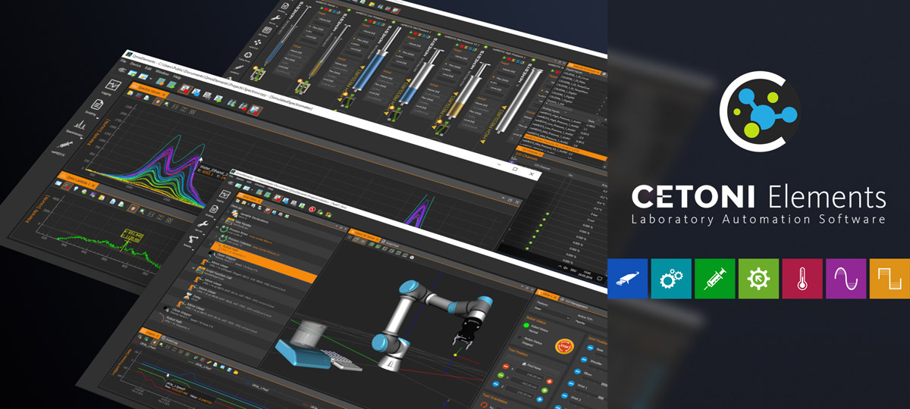

CETONI Elements Online Manual
Welcome to CETONI Elements documentation!
The CETONI Elements software is a modular laboratory automation solution for controlling and automating all CETONI devices and for integrating and automating external devices.
Symbols and Signal Words Used
The following symbols are used in this manual and are designed to aid your navigation through this document:
Tip
Describes practical tips and useful information to facilitate the handling of the software.
Important
Describes important information and other especially useful notes, in which no dangerous or damaging situations can arise.
Attention
Indicates a potentially damaging situation. Failure to avoid this situation may result in damage to the product or anything nearby.
Caution
Describes a situation that may be dangerous. If this aspect is not avoided, light or minor injuries as well as damage to property could result.